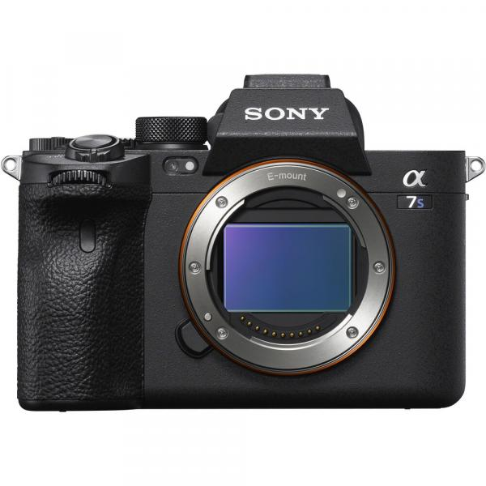
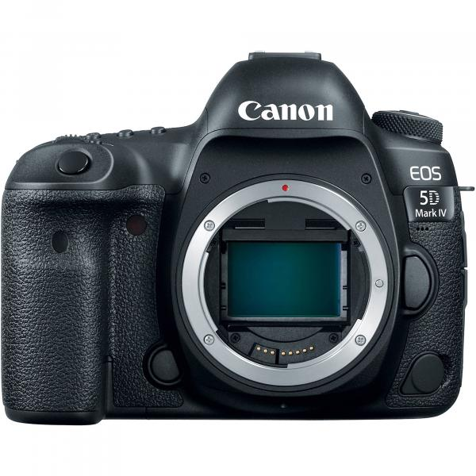
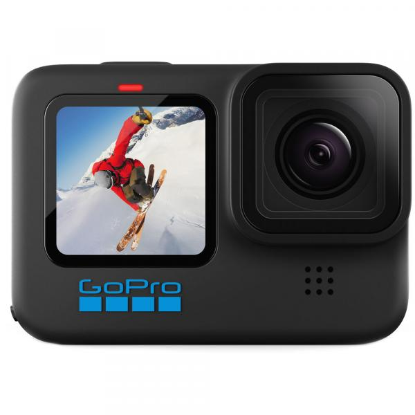

Deskripsi:
Panasonic Lumix S1H adalah kamera mirrorless yang dirancang khusus
untuk pengambilan gambar dan video profesional. Ditenagai oleh sensor
gambar full-frame 24.2MP, kamera ini menawarkan kemampuan merekam
video dalam resolusi 6K dan 4K dengan kualitas yang luar biasa.
Dilengkapi dengan V-Log dan V-Gamut, kontrol manual penuh, sistem
stabilisasi gambar in-body, dan fitur video profesional, Lumix S1H
merupakan pilihan ideal bagi sinematografer yang membutuhkan kinerja
tinggi dan fleksibilitas dalam produksi video. Dibangun dengan badan
magnesium alloy yang tahan cuaca dan tahan debu, kamera ini juga cocok
untuk penggunaan di luar ruangan.

Camera Sony A7S III Mirrorless
Harga: Rp 675.000/hari
Deskripsi:
Kamera Sony A7S III adalah kamera mirrorless yang sangat canggih dan
populer di kalangan para fotografer dan videografer profesional.
Kamera ini memiliki kemampuan merekam video 4K hingga 120fps dan video
1080p hingga 240fps, memberikan fleksibilitas yang luar biasa dalam
menghasilkan konten berkualitas tinggi. Sensor full-frame 12.1
megapiksel yang dimilikinya memungkinkan kinerja luar biasa dalam
kondisi cahaya rendah, dengan rentang ISO yang luas hingga 409.600.
Fitur-fitur lainnya termasuk stabilisasi gambar in-body 5-axis,
autofocus yang sangat responsif dan akurat, serta desain yang ringkas
dan tahan cuaca, membuatnya menjadi pilihan yang sempurna untuk
berbagai jenis pengambilan gambar.
Camera Sony A7S III Mirrorless
Harga: Rp 325.000/hari
Deskripsi:
Kamera Fujifilm X-H1 Mirrorless adalah kamera digital yang sangat
disukai oleh fotografer profesional dan penggemar fotografi serius.
Dikenal karena kombinasi kualitas gambar yang luar biasa dan desain
yang ergonomis, X-H1 menawarkan sensor APS-C X-Trans CMOS III
berkekuatan 24,3 megapiksel yang menghasilkan gambar berkualitas
tinggi dengan detail yang kaya dan warna yang hidup. Fitur-fitur
tambahan seperti sistem stabilisasi gambar dalam badan kamera,
kemampuan merekam video 4K, dan mode burst shooting yang cepat
membuatnya menjadi pilihan yang solid untuk berbagai jenis fotografi
dan pembuatan film. Desain bodi yang kokoh dan tahan lama juga
menambah daya tariknya bagi para pengguna yang aktif secara
fotografi.

Camera DSLR Canon 5D Mark IV
Harga: Rp 450.000/hari
Deskripsi:
Kamera DSLR Canon 5D Mark IV adalah salah satu dari lini kamera
profesional terkemuka dari Canon. Dikenal karena kombinasi kualitas
gambar yang luar biasa, ketangguhan, dan kemampuan video yang kuat,
kamera ini menjadi pilihan populer di kalangan fotografer dan
videografer yang serius. Dilengkapi dengan sensor full-frame 30.4
megapiksel, prosesor gambar canggih, rentang dinamis yang luas, dan
sistem autofokus yang andal, 5D Mark IV mampu menghasilkan gambar yang
tajam dan detail dalam berbagai kondisi pencahayaan. Selain itu,
kemampuan merekam video 4K serta fitur konektivitas seperti Wi-Fi dan
GPS membuatnya sangat serbaguna untuk berbagai jenis proyek fotografi
dan videografi.
Camera DLSR Nikon D850 (FF)
Harga: Rp 550.000/hari
Deskripsi:
Kamera DSLR Nikon D850 (Full Frame) adalah salah satu kamera yang
sangat dihormati dalam dunia fotografi. Dikenal karena kualitas gambar
yang luar biasa, D850 memiliki sensor full-frame 45.7 megapiksel yang
menghasilkan detail yang tajam dan warna yang kaya. Fitur autofokus
canggihnya memungkinkan fokus yang cepat dan akurat, bahkan dalam
kondisi pencahayaan rendah. Dengan rentang ISO yang luas, kamera ini
cocok untuk berbagai situasi fotografi, mulai dari pemotretan di
studio hingga pengambilan gambar lanskap yang menuntut. Selain itu,
D850 juga dilengkapi dengan kemampuan perekaman video 4K yang
mengesankan, menjadikannya pilihan yang serbaguna bagi para fotografer
dan videografer profesional. Desain ergonomisnya membuatnya nyaman
digunakan dalam pemotretan yang panjang, sementara bodi yang kokoh dan
tahan cuaca memastikan keandalan dalam berbagai kondisi lingkungan.

GoPro Hero 10 Action Camera (5.3K60 4K120, HyperSmooth 4.0)
Harga: Rp 200.000/hari
Deskripsi:
GoPro Hero 10 Action Camera adalah kamera aksi canggih yang
menawarkan kemampuan merekam video hingga resolusi 5.3K pada kecepatan
60 frame per detik atau 4K pada kecepatan 120 frame per detik. Dengan
teknologi HyperSmooth 4.0, kamera ini memberikan stabilitas gambar
yang luar biasa bahkan dalam kondisi gerakan yang intens. Desainnya
yang ringkas dan tahan air memungkinkan pengguna untuk merekam
petualangan mereka di berbagai lingkungan dengan mudah. Kamera ini
juga dilengkapi dengan berbagai fitur pintar seperti kontrol suara,
pengenalan wajah, serta kemampuan untuk mengambil foto berkualitas
tinggi dalam mode burst atau time lapse. Dengan kombinasi kualitas
video yang tinggi dan kemampuan stabilisasi yang kuat, GoPro Hero 10
Action Camera adalah pilihan ideal untuk para penggemar olahraga
ekstrem dan petualangan outdoor.